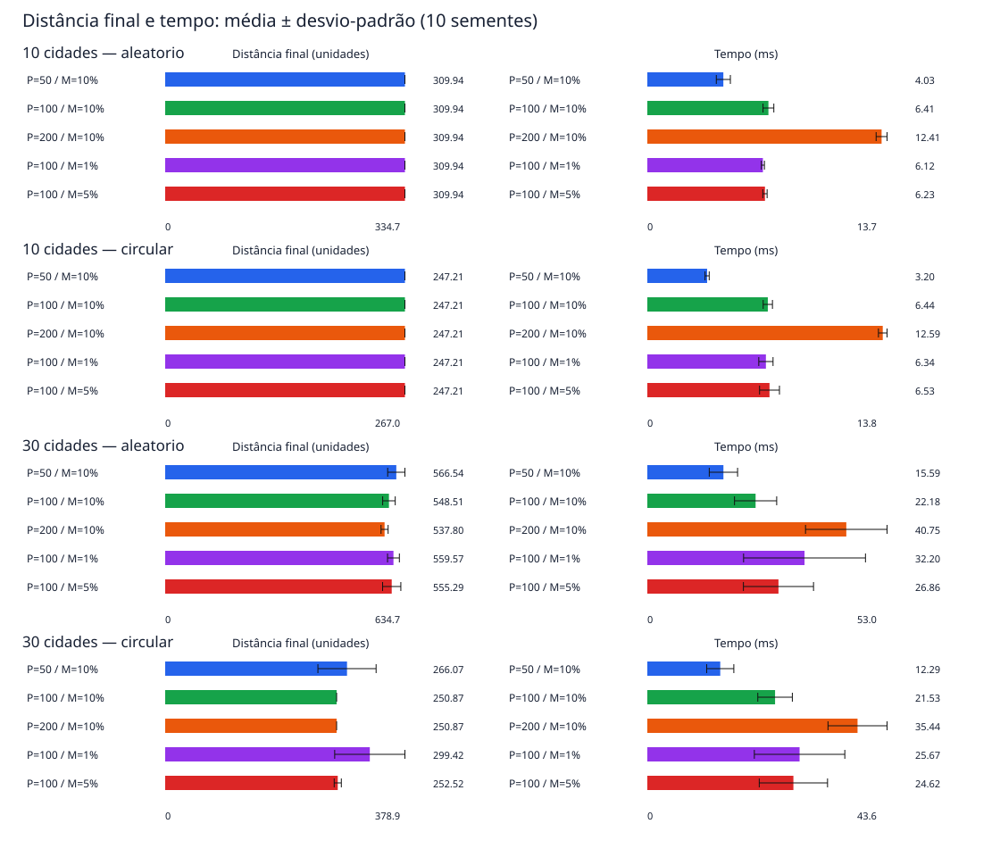
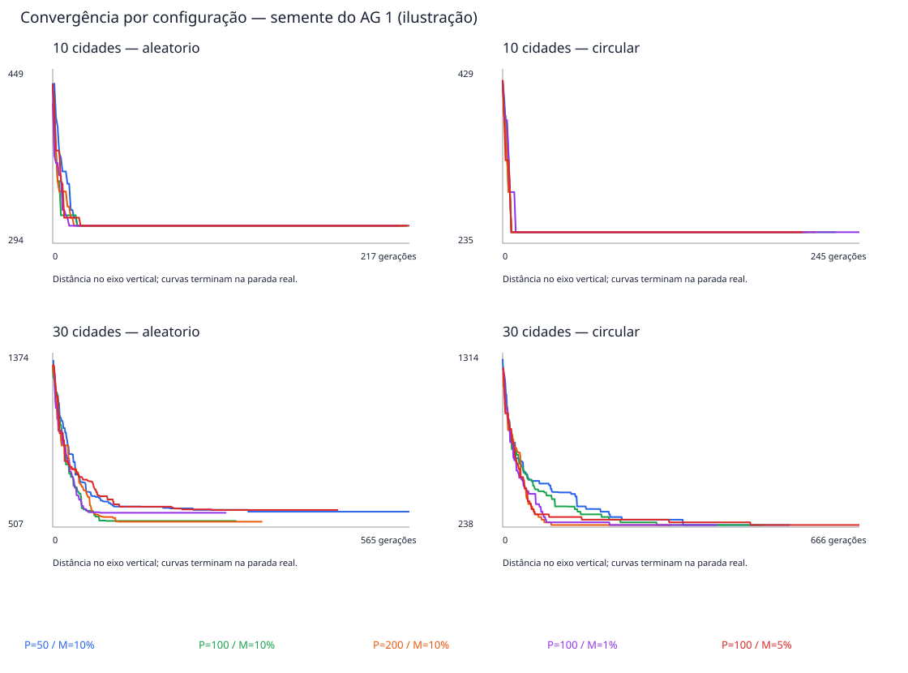
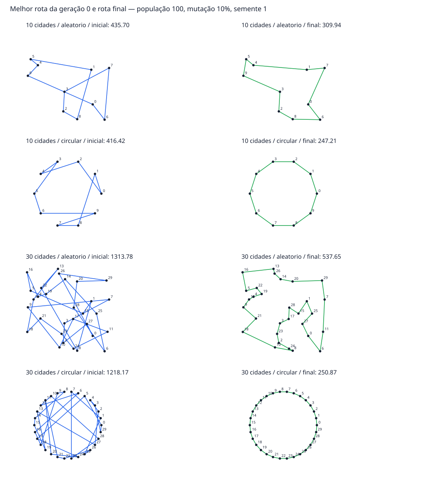

200 execuções reais; cinco configurações, dois cenários, dois tamanhos e dez sementes. Tabelas: média ± desvio-padrão amostral. Menor distância é melhor.
Pontos fixos (semente 42), cruzamento 90%, elitismo 1, torneio 3; parada em 1.000 gerações ou 200 sem melhoria. Cada comparação altera uma variável.
Conclusões e limitações detalhadas · Explicação do projeto · Resumo CSV
| População | Mutação | Distância | Tempo (ms) | Gerações |
|---|---|---|---|---|
| 50 | 10% | 309.9428 ± 0.0000 | 4.027 ± 0.372 | 213.9 |
| 100 | 10% | 309.9428 ± 0.0000 | 6.415 ± 0.287 | 210.3 |
| 200 | 10% | 309.9428 ± 0.0000 | 12.410 ± 0.290 | 208.1 |
| 100 | 1% | 309.9428 ± 0.0000 | 6.122 ± 0.081 | 210.9 |
| 100 | 5% | 309.9428 ± 0.0000 | 6.232 ± 0.114 | 211.4 |
| População | Mutação | Distância | Tempo (ms) | Gerações |
|---|---|---|---|---|
| 50 | 10% | 247.2136 ± 0.0000 | 3.198 ± 0.112 | 213.9 |
| 100 | 10% | 247.2136 ± 0.0000 | 6.444 ± 0.248 | 214.7 |
| 200 | 10% | 247.2136 ± 0.0000 | 12.591 ± 0.231 | 210.0 |
| 100 | 1% | 247.2136 ± 0.0000 | 6.342 ± 0.381 | 217.1 |
| 100 | 5% | 247.2136 ± 0.0000 | 6.535 ± 0.531 | 220.0 |
| População | Mutação | Distância | Tempo (ms) | Gerações |
|---|---|---|---|---|
| 50 | 10% | 566.5358 ± 21.1413 | 15.585 ± 2.900 | 567.7 |
| 100 | 10% | 548.5062 ± 15.4020 | 22.176 ± 4.318 | 391.7 |
| 200 | 10% | 537.7991 ± 8.6710 | 40.752 ± 8.350 | 342.2 |
| 100 | 1% | 559.5689 ± 14.5105 | 32.197 ± 12.483 | 576.6 |
| 100 | 5% | 555.2924 ± 22.3342 | 26.860 ± 7.180 | 466.7 |
| População | Mutação | Distância | Tempo (ms) | Gerações |
|---|---|---|---|---|
| 50 | 10% | 266.0669 ± 42.5687 | 12.294 ± 2.289 | 444.6 |
| 100 | 10% | 250.8683 ± 0.0000 | 21.535 ± 2.913 | 381.0 |
| 200 | 10% | 250.8683 ± 0.0000 | 35.436 ± 4.979 | 302.9 |
| 100 | 1% | 299.4238 ± 51.3898 | 25.666 ± 7.626 | 471.2 |
| 100 | 5% | 252.5224 ± 5.2308 | 24.624 ± 5.755 | 448.5 |

Semente 1 para todas as configurações. As curvas terminam na geração real de parada.

Melhor rota da população inicial e final: população 100, mutação 10%, semente 1. A escala é a mesma para todos os mapas.

Resultados restritos aos mapas e sementes avaliados; não provam uma configuração universalmente melhor. O ótimo só é conhecido no cenário circular. Tempos dependem do ambiente. Veja RESULTADOS.md para as observações de cada tabela.